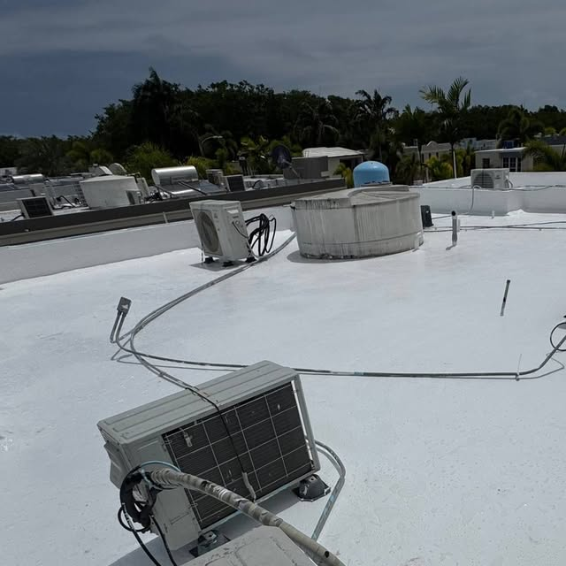
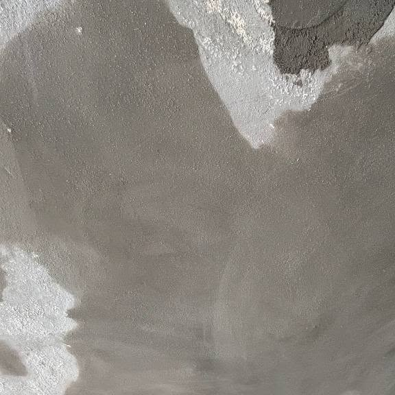
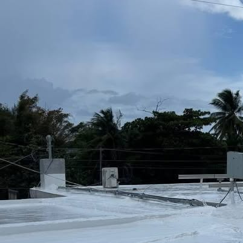
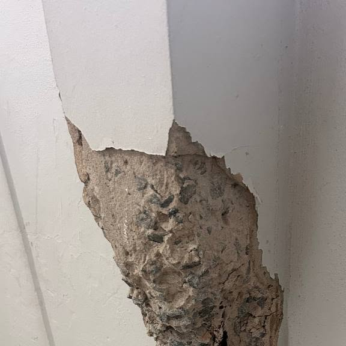
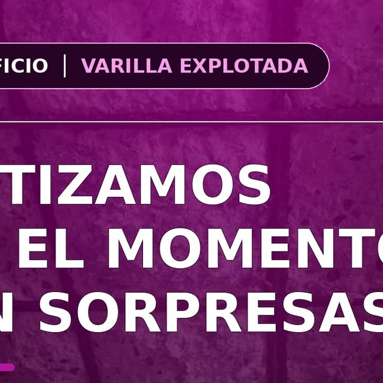
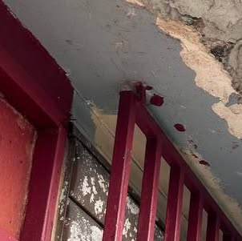
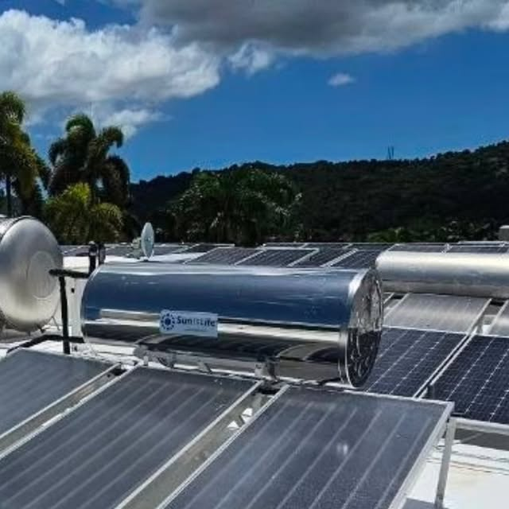

Sellado de techos - Cataño y Toa Baja
Sistema de sellado completo para que la lluvia no entre más a tu casa. Reparamos varilla explotada, corregimos filtraciones y goteras, e impermeabilizamos todo el techo.
Resultados reales
Cada foto es un trabajo real de sellado hecho por el equipo de Sin Gotera. Toca cualquier foto para verla grande.







Desliza para ver todos los trabajos
Lo que hacemos
Del diagnóstico al sellado final: todo lo que tu techo necesita para aguantar la lluvia.
Sistema de sellado completo para que la lluvia no entre más a tu casa.
SelladoReparamos la varilla expuesta y corroída antes de sellar, para que el arreglo dure.
EstructuraDetectamos por dónde entra el agua y corregimos el problema de raíz.
ReparaciónBarrera impermeable sobre toda la superficie del techo.
ProtecciónMantenimiento preventivo para que el sellado siga trabajando año tras año.
CuidadoAsí de fácil
Llama al 787-234-3777 o escríbenos por WhatsApp. Sin compromiso.
Revisamos las condiciones de tu techo e identificamos qué necesita reparación.
Corregimos varilla y filtraciones, y aplicamos el sistema de sellado adecuado.
Te entregamos el techo sellado e impermeabilizado, listo para la lluvia.
Quienes somos
Somos Sin Gotera: sellado de techos en Cataño y Toa Baja. Antes de sellar, evaluamos tu techo, reparamos la varilla explotada y corregimos cada filtración para que el sistema quede bien hecho desde la base.
Nuestro nombre lo dice todo: trabajamos para que no caiga ni una gota más dentro de tu casa.
Preguntas frecuentes
Sellado de techos, reparación de varilla explotada, corrección de filtraciones y goteras, impermeabilización y mantenimiento de techos.
Cataño y Toa Baja. Escríbenos para confirmar tu ubicación exacta.
Sí. Primero evaluamos las condiciones del techo, identificamos qué necesita reparación y determinamos el sistema de sellado adecuado.
Sí. Reparamos la varilla expuesta y corroída antes de aplicar el sellado, para que el arreglo dure de verdad.
Llama al 787-234-3777 o síguelos en Instagram como @singotera.
Agenda tu visita
Telefono / WhatsApp
787-234-3777Cobertura
Cataño, Toa Baja y áreas cercanas
Llena esto y te abrimos WhatsApp con tu mensaje listo.
Cotizacion sin compromiso: Escríbenos por WhatsApp con fotos de tu techo y te respondemos con la cotización.
Esta pagina la creo ManuPro. Escribenos hoy mismo y cotiza la website profesional de tu negocio.
Cotizar por WhatsApp